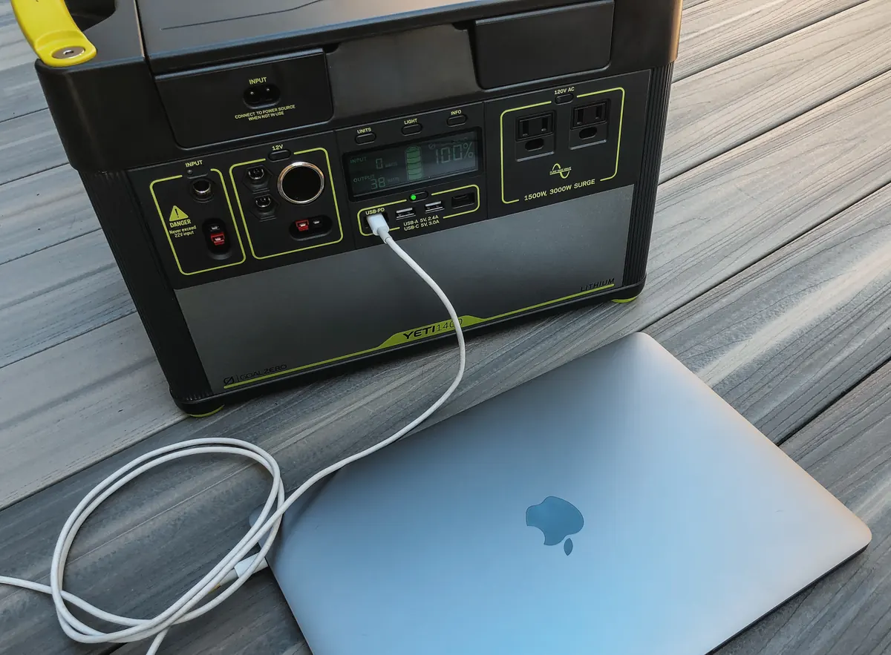

Anker SOLIX C1000 Gen 2 vs EcoFlow Delta 3 Classic: cuál comprar
Las dos dan 1.024 Wh LiFePO4 y no se amplían. La Anker gana en vatios continuos y en velocidad de carga; la Delta 3 Classic gana en silencio y en el ecosistema EcoFlow. La pregunta no es «cuál es mejor», sino qué priorizas.
Contiene enlaces de afiliado: si compras a través de ellos recibimos una comisión sin coste adicional para ti. Cómo decidimos nuestras recomendaciones.
Ver precio de la Anker C1000 Gen 2
Las cifras enfrentadas
| Especificación | Anker C1000 Gen 2 | Delta 3 Classic |
|---|---|---|
| Capacidad | 1.024 Wh | 1.024 Wh |
| Salida continua | 2.000 W | 1.800 W |
| Pico | 3.000 W | 3.600 W (X-Boost 2.400 W) |
| Carga red | 0-100 % en 49 min | 0-80 % en 45 min · 0-100 % ≈60 min |
| Entrada solar | 600 W | 500 W |
| Ciclos | 4.000 al 80 % | Más de 4.000 / 10 años (sin umbral % en ficha EU) |
| Peso | 11,3 kg | 12,1 kg |
| Ampliación | No | No |
| SAI | ≤10 ms | 10 ms |
Datos de fichas oficiales Anker y EcoFlow EU (revisado el 15 de octubre de 2026). No confundas la Delta 3 Classic con la Delta 3 «a secas», que sí admite baterías extra.
Potencia e inducción
Aquí la Anker marca distancia: 2.000 W continuos frente a 1.800 W de la Classic. Una placa de inducción de 1.500 W, un hervidor o una herramienta con arranque duro se llevan mejor con la C1000 Gen 2 sin depender del X-Boost.
La Delta 3 Classic responde con un pico de 3.600 W y X-Boost hasta 2.400 W: vale para muchos aparatos de camping y para cafetera puntual, pero en cocina eléctrica diaria la Anker deja más margen real en el enchufe.
A favor de la Anker
- 2.000 W continuos de serie
- Mejor para inducción y picos cortos intensos
A favor de la Classic
- Pico de 3.600 W y X-Boost hasta 2.400 W
- Suficiente para el 99 % de usos sin inducción
Ver precio de la Anker C1000 Gen 2
Carga desde el enchufe y con panel
Anker declara carga completa en 49 minutos con HyperFlash a 1.600 W (se activa desde la app). EcoFlow pone el 0-80 % en 45 minutos y el 100 % en torno a una hora. Si recargas entre viajes o tras un apagón corto, esos minutos cuentan.
En solar, la Anker admite 600 W (60 V máx.) y habla de unas 1,8 h con ese techo; la Classic se queda en 500 W y unos 2,5 h con un panel de 500 W. Con el sol de España y un panel de 200-400 W la diferencia se nota menos: primero calcula tus Wh con la calculadora.
Ciclos, peso y SAI
Anker publica 4.000 ciclos al 80 %. EcoFlow, en la ficha EU de la Classic, habla de 10 años y «más de 4.000 ciclos» en el listado de Amazon, sin el umbral de capacidad. Son cifras del mismo orden; no las trates como una victoria clara de nadie.
La Anker pesa 11,3 kg; la Classic, 12,1 kg. Ambas conmutan en SAI de 10 ms: sirven para router, portátil o CPAP si tu fuente aguanta ese corte. Prueba un corte simulado antes de confiar en un sobremesa.
Donde EcoFlow sigue por delante es el ruido declarado: menos de 30 dB a 600 W. Si la estación vive junto a la cama o en un salón pequeño, ese dato pesa más que 0,8 kg de diferencia.
Por qué ninguna se amplía
Las dos son unidades cerradas de 1.024 Wh. No hay puerto de batería extra. Si dentro de dos años querrás 3 o 5 kWh, hoy estás comprando el techo.
Si necesitas crecer, sal de esta comparativa: la Delta 2 Max, la Delta 3 (sin Classic) o la Jackery Explorer 1000 Plus sí admiten packs. La Classic es la opción «compro y me olvido» dentro de EcoFlow.
Ver precio de la Delta 3 Classic
Veredicto según tu caso
- Inducción, hervidor o quieres el máximo de vatios por enchufe: Anker SOLIX C1000 Gen 2.
- Silencio, app EcoFlow y ya tienes paneles o baterías de la marca: Delta 3 Classic.
- Vas a ampliar capacidad en uno o dos años: ninguna de las dos; mira la comparativa 2026.
- Presupuesto cerrado por debajo de 500 €: las de la guía de menos de 500 €, no esta gama.
Elige Anker si…
- Priorizas 2.000 W y carga en 49 minutos
- Quieres 600 W de entrada solar
Elige Classic si…
- Priorizas silencio y el ecosistema EcoFlow
- No cocinas con inducción a menudo
Ver precio de la Anker C1000 Gen 2 → Ver precio de la Delta 3 Classic →
Preguntas frecuentes
¿Cuál tiene más potencia, Anker C1000 Gen 2 o Delta 3 Classic?
La Anker: 2.000 W continuos y 3.000 W de pico. La Classic declara 1.800 W continuos, X-Boost hasta 2.400 W y pico de 3.600 W.
¿Se pueden ampliar con batería extra?
No. Las dos son fijas a 1.024 Wh. Si quieres crecer, sal a Delta 3 (sin Classic), Delta 2 Max o Jackery 1000 Plus.
¿Cuál carga más rápido desde el enchufe?
La Anker declara 0-100 % en 49 minutos. La Classic: 0-80 % en 45 minutos y carga completa en unos 60 minutos.
Escrito por Alberto Gallardo Morales, editor de Estacionportatil. Contrastamos las fichas oficiales de Anker y EcoFlow EU; no hemos medido estas unidades en laboratorio. Nuestra metodología. Última revisión: octubre de 2026.